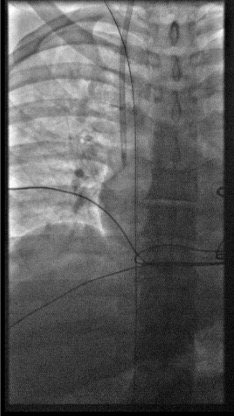
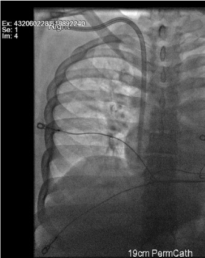

Indications / Contraindications
Indications
- New dialysis patients: Bridge before AV fistula maturation (≥1 month) or AV graft (≥3 weeks)
- Established HD patients: Failed or maturing permanent access
- Exhausted AV access options: Catheter as long-term or permanent access
- NKF-K/DOQI guideline: TCVC indicated when access needed >3 weeks
- Non-dialysis indications: Long-term chemotherapy (Hickman/Broviac/Groshong), parenteral nutrition, apheresis
- Note: Fewer than 10% of chronic HD patients should rely on catheter as permanent access
Contraindications
- Absolute: Coagulopathy (INR >1.5, platelets <50K); active septicemia — must have negative blood cultures ×48h on organism-specific antibiotics before tunneled placement (place non-tunneled acutely then convert)
- Relative: Central venous stenosis/occlusion (venoplasty first); cardiac device ipsilateral side; prior radiation
- NEVER use subclavian vein in dialysis patients — irreversibly compromises future AV access
Pre-Procedure Checklist
Relevant Anatomy
Venous Access Sites
- Right IJV (first-line): Straight path to SVC, minimal angulation, preserves subclavian for future AV access
- Left IJV: Two 90° turns; stiff hydrophilic wire required; higher kink risk
- External jugular: Viable when both IJVs occluded
- Subclavian: NEVER use in dialysis patients — irreversible AV access compromise
Tunnel and Tip Anatomy
- Tunnel: From puncture site to anterior chest exit site; low puncture near clavicle creates smooth infraclavicular curve preventing kinking
- Dacron cuff: Position 2–3 cm from exit site; takes 2–4 weeks to incorporate into subcutaneous tissue. Avoid placing cuff above the clavicle — makes removal challenging
- Tip position: Right atrium for optimal flow (target 400–600 mL/min); too high in SVC = inadequate flow
How I Do It
Default RadCall approach + community cards
Tunneled Dialysis Catheter
Steps
US survey
Position
Sterile prep + drape
Mark exit site + local anesthesia
US-guided micropuncture right IJV

Measure Intravascular Length and Exchange Wire
- Measure the clamped wire length minus ~4 cm (hub length — confirm by measuring the micropuncture hub). This is the intravascular length.
- Add tunnel length to get total catheter length needed.
- For cuffed catheters subtract 2–3 cm (cuff-to-skin-incision distance) → this gives ideal tip-to-cuff length.
- Dialysis catheters come in preset sizes — choose one with tip-to-cuff length that is adequate.
- Hickman catheters and tunneled uncuffed small-bore catheters are cut to length.
Advance peel-away sheath
Create tunnel
Advance catheter + split sheath
Confirm tip position + cuff

Secure + lock
Troubleshooting
Wire won't advance past IJ-brachiocephalic junction (left side)
Likely cause: Acute angulation at left brachiocephalic vein — left IJV requires two 90° turns.
Next step: Use stiff hydrophilic wire. Rotate patient's head ipsilateral to straighten angle. Use fluoroscopic guidance through the turns. Consider right IJV access if left side fails.
Peel-away sheath won't advance
Likely cause: Amplatz wire tip in RA instead of IVC — wire buckles and prevents sheath advancement.
Next step: Reconfirm wire tip in IVC under fluoroscopy. Dilate incrementally. Apply smooth forward pressure while rotating — do not force.
Inadequate dialysis flow at first use
Likely cause: Tip not in RA (too high in SVC), fibrin sheath, kinking, or thrombosis.
Next step: Confirm tip position fluoroscopically — advance to RA if in SVC. Check for kink. TPA lock (1 mg/mL, 30 min dwell × 2). If persistent → catheter exchange over wire.
Cuff too far from exit site
Likely cause: Tunnel geometry — cuff migrated inward during tunneling.
Next step: Pull catheter back at exit site to reposition cuff to 2–3 cm from exit. Secure with suture. Target: cuff close enough to anchor but not so close it acts as infection conduit.
Complications
Periprocedural
- Pneumothorax (1–3%) — post-procedure CXR mandatory; small = observe; large = chest tube
- Arterial puncture (1–3%) — Do NOT dilate carotid; remove needle, hold pressure; if dilated → vascular surgery emergency
- Hematoma (1–3%) — most resolve with compression; expanding = urgent imaging
- Air embolism (<1%) — prevent with Trendelenburg + immediate hub occlusion after dilator removal
Long-term
- Catheter malfunction (most common) — fibrin sheath, tip malposition, kinking, thrombosis → TPA lock or catheter exchange
- CLABSI (1–3 per 1000 catheter-days) — remove for Staph aureus/fungal/tunnel infection; antibiotic lock salvage for coag-neg Staph/gram-negatives in selected cases
- Central venous thrombosis — anticoagulation; may require catheter relocation
Post-Procedure Care
Immediate
- Fluoroscopic tip confirmation in RA before leaving suite
- Lock lumens with heparinized saline per hub volume — do not exceed printed lock volume
- Notify dialysis team — ready for next scheduled session
- Exit site dressing: chlorhexidine-impregnated sponge
Follow-up
- Document flow rates at first dialysis use — target 400–600 mL/min
- Sutures removed 2–3 weeks (after Dacron cuff incorporates)
- Patient education: keep exit site dry, signs of infection (redness, drainage, fever)
- Reinforce: this is a bridge — AV access creation/maturation remains the goal
Critical Pearls
Catheter Management
Routine Care
- Flushing: Heparinized saline lock after each use; never exceed lock volume printed on hub
- Dressing changes: Chlorhexidine-impregnated sponge every 7 days or when soiled/wet; strict sterile technique
- Exit site inspection: Each dialysis session — erythema, drainage, tenderness, tunnel track assessment
Fibrin Sheath (Most Common Cause of Inadequate Flow)
- TPA 1 mg/mL dwell × 30 min × 2 attempts; aspirate before reconnecting
- If TPA fails → fluoroscopic exchange over wire with fibrin sheath disruption, or femoral stripping
- Rule out kink on fluoroscopy before assuming fibrin sheath
CLABSI Management
- Blood cultures from catheter AND peripheral site simultaneously
- Remove catheter: Staph aureus, fungal, tunnel infection — no salvage attempt
- Antibiotic lock salvage: Coag-neg Staph, gram-negatives in selected stable patients
- New tunneled catheter placement only after repeat negative cultures (ideally after 48h on organism-specific antibiotics)
Thrombotic Occlusion
- TPA lock — dwell per protocol; aspirate; do not flush clot into circulation
- If TPA fails → image-guided exchange; rule out kink first
- Consider systemic anticoagulation if central venous thrombosis on imaging